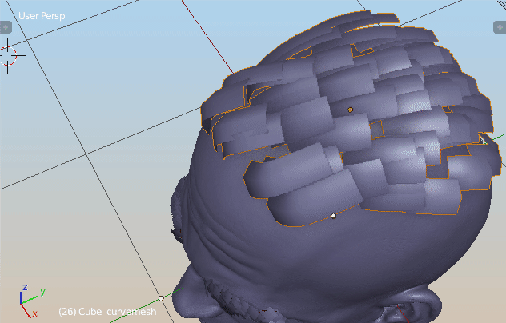

Ribbon operations:¶
Curve Simplify¶
Curve Simplify- Allows to reduce point count. Good for reducing polycount on hairs .
Resample Curve¶
 Resample Curve. Allows to increase/decrease number of points each curve is made of. It keeps the original strand radius and tilt.
Resample Curve. Allows to increase/decrease number of points each curve is made of. It keeps the original strand radius and tilt.
Smooth Curve¶

Smooth Curve - smooth strand points (eg. to reduce noise)
Smooth Tilt¶
Smooth Tilt
Taper Curve¶
Taper Curve - change strands radius over length
Align Curve tilt¶
Align Curve tilt - lets you align cure tilt to target object surface.
Randomize Curve Tilt¶
Randomize Curve Tilt - change curve tilt over its length
Select Tips/Roots¶
Select Tips/Roots - lets you select first/last points on curves. There is randomize option under F6 properties.
Ribbon operations:¶
Add Ribbon Weights¶
 Add Ribbon Vertex Color - create black and white color gradient from strand root to tip
Add Ribbon Vertex Color - create black and white color gradient from strand root to tip
Add Ribbon Weights¶

Add Ribbon Weights - create vertex weight gradient from strand root to tip
UV hair operator¶

UV hair operator (found under spacebar) - Left click and draw multiple rectangular shapes, in uv Editor, to define the uv bounds for hair strands. Press enter to confirm.
Convert operations¶
Convert Particle Hair to (ribbon curves), curves to Particle hair, Grease Pencil to Curves etc.:
Ribbon to Curves¶
Ribbon to Curves/ Curves to Ribbon - allow for switching between ribbon curve and ribbon mesh state. Usually you will want to do hair modeling in curve state, and then do UV in ribbon mesh state.
Particle Hairs to Curve¶
 Particle Hairs to Curve - generate curve ribbons from Particle hair. Align their tilt to head with 'Align Tilt' checkbox, and embed hair roots deeper into the scull using 'Embed Roots' parameter.
Particle Hairs to Curve - generate curve ribbons from Particle hair. Align their tilt to head with 'Align Tilt' checkbox, and embed hair roots deeper into the scull using 'Embed Roots' parameter.
Particle Hairs From Curve¶
 Particle Hair from Curves (this can be used to convert zbrush fibermesh to blender Particle Hair system). Select curves and target mesh (that will receive Particle Hair) and use 'Particle Hair from Curves' to convert curves object to blenders Hair system.
Particle Hair from Curves (this can be used to convert zbrush fibermesh to blender Particle Hair system). Select curves and target mesh (that will receive Particle Hair) and use 'Particle Hair from Curves' to convert curves object to blenders Hair system.
Ribbons from particle hair with children¶
 'Ribbons from particle hair with children' - gives more evenly distributed result compared to build-in child particles . Great for short Hair.
'Ribbons from particle hair with children' - gives more evenly distributed result compared to build-in child particles . Great for short Hair.
Particle Hair From Grease Pencil¶
 'Particle Hair From Grease Pencil' strokes painted with grease pencil, can be converted to particle hair (with some options available under f6). Checkbox next to this button, describes if you want to use Scene GPencil data (when enabled), or Object GP data (when disabled).
'Particle Hair From Grease Pencil' strokes painted with grease pencil, can be converted to particle hair (with some options available under f6). Checkbox next to this button, describes if you want to use Scene GPencil data (when enabled), or Object GP data (when disabled).
- 'Flip UV' option in preferences - if enabled random strands will have uv's flipped in X-axis.
GPencil to curve ribbon¶
 Grease Pencil to curve - quickly sketch gprease pencil guides, that will be converted to curve ribbons. Use F6 for options. If you run this operation with curve hair selected, it will add new curves to it. If you run it with mesh selected, then it will be used for as target for ribbons aligning and offset.
Grease Pencil to curve - quickly sketch gprease pencil guides, that will be converted to curve ribbons. Use F6 for options. If you run this operation with curve hair selected, it will add new curves to it. If you run it with mesh selected, then it will be used for as target for ribbons aligning and offset.
Generate Braid¶

Braids from curve - just select Source curve, and run 'Generate Braids' on it. As usual there are some options under the F6 button. After you are finish, original Source curve can influences the generated braid so you can twist it (ctrl +T), scale radius (alt+s) to change the sape of braid.